Inhalt Index DeskTop Bronstein

 Geometrie Differentialgeometrie Ebene Kurven Einhüllende von Kurvenscharen
Geometrie Differentialgeometrie Ebene Kurven Einhüllende von Kurvenscharen


Es sei eine einparametrige Kurvenschar durch die Gleichung
gegeben. Dann besitzen zwei unendlich benachbarte Kurven dieser Schar mit den Parameterwerten  und 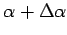 Punkte K der größten Annäherung. Dabei handelt es sich entweder um Schnittpunkte der Kurven 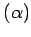 und 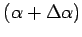 oder um Punkte auf 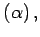 deren Abstand zu 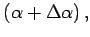 gemessen auf der Normalen, eine infinitesimale Größe höherer Ordnung von 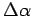 ist.
und 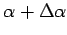 Punkte K der größten Annäherung. Dabei handelt es sich entweder um Schnittpunkte der Kurven 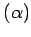 und 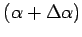 oder um Punkte auf 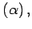 deren Abstand zu 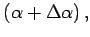 gemessen auf der Normalen, eine infinitesimale Größe höherer Ordnung von 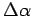 ist.
Für 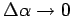 strebt die Kurve gegen die Kurve wobei sich in manchen Fällen der Punkt K einer Grenzlage, dem Grenzpunkt, nähern kann.